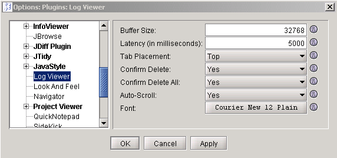

Log Viewer Plugin
PLUGIN SETTINGS

Buffer Size
Buffer Size is the number of characters which log viewer
reads from a file each time it pulls characters from that file.
High values will increase the performance of log viewer, but
will consume more RAM.
Latency
Latency is the number of milliseconds which log viewer rests
each time it reaches the end of a file before checking to see if anything
has been added to that file.
Latency values of lower than 1000ms (1 second) are not recommended, as they
may cause performance problems (due to thrashing).
Tab Placement
Tab Placement dictates the location of the tabs within logviewer plugin.
These tabs may be located at the Top, Bottom, Left, or Right side of the window.
Confirm Delete
When performing the Delete action, you may or may not want a dialog
to appear asking you to confirm your intent to delete the contents
of the currently selected file.
By changing the value of this preference, you can control
whether or not this dialog appears.
Confirm Delete All
When performing the Delete All action, you may or may not want a dialog
to appear asking you to confirm your intent to delete the contents
of all open files.
By changing the value of this preference, you can control
whether or not this dialog appears.
Word Wrap
The log file that you are viewing may have lines that are longer
than the width of the viewable area of the log viewer. You may not
want to scroll left and right to read the log. By changing the value
of this preference, you can control whether long lines wrap to
several lines.
Auto-Scroll
When auto-scroll is enabled, log viewer automatically scrolls
to the bottom of a followed file when new text is appended that file.
This is a global setting, auto scrolling for individual log files can
be turned on or off using the "Tail" menu item on the LogViewer popup
menu.
Font
You can choose a font to be used to show the text of the log.
Horizontal Scroll Lock
In the bottom right corner of the of the LogViewer is a checkbox. When
checked, the horizontal scroll bar is locked at its current position.
This is useful when the log file has long lines that are better viewed
without word wrap on and all the good content is on the right end of the
lines. Set the horizontal scroll bar to the best viewing location, then
check the box. When new lines are added to the log file, the horizontal
scroll bar will stay "locked" at that location rather than moving to the
extreme left as usual.